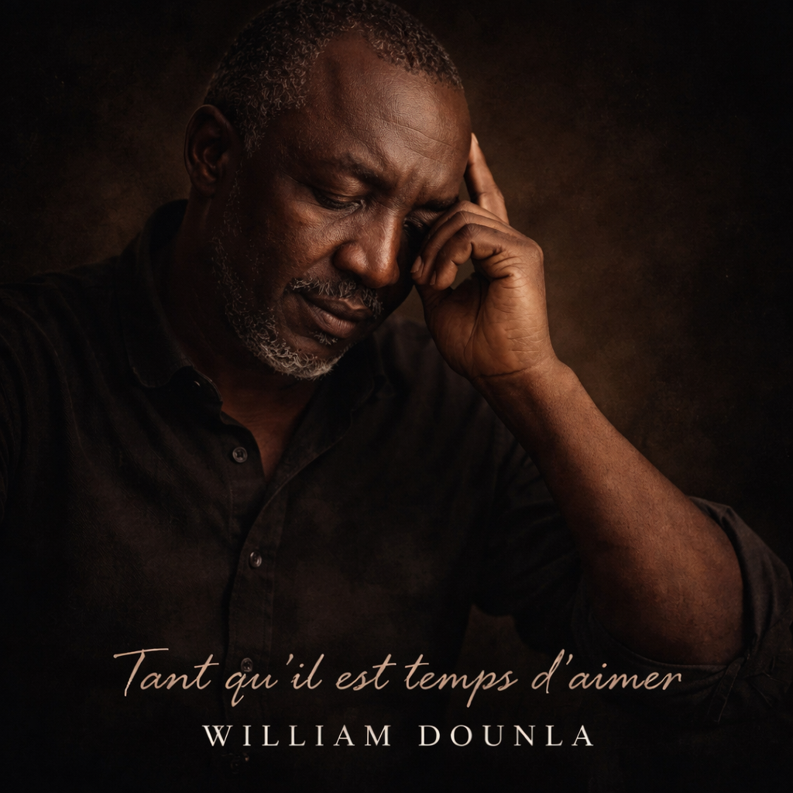

Un espace où la musique rejoint la foi, l'émotion et la transmission. Gospel, acoustique, afro-soul — une autre manière de toucher le cœur tout en éveillant la conscience.
La musique est une autre manière de transmettre — toucher le cœur tout en éveillant la conscience. Réparer ce qui est brisé. Encourager ce qui doute. Inspirer ce qui hésite.— William Dounla · WD Harmony Records
Chaque chanson est un message. Chaque mélodie, une main tendue.

La foi mise en musique. Des chansons qui célèbrent, adorent et transmettent la profondeur d'une vie vécue avec Dieu. Sobres, sincères, puissantes.
La voix et la mélodie à leur état le plus pur. Des créations intimes, proches, qui parlent à l'individu dans ses moments de réflexion ou de fragilité.
Les racines africaines rencontrent l'émotion universelle. Un son chaleureux, humain, qui porte en lui la mémoire et l'espérance du continent.
Des chansons écrites depuis la vie réelle — pour la famille, les couples, les enfants, ceux qui cherchent, ceux qui souffrent, ceux qui espèrent.
WD Harmony Records est né d'une conviction simple : certaines vérités se transmettent mieux par la musique que par les mots seuls. Quand le cœur est fermé, une mélodie peut s'y glisser là où un livre ne passe pas encore.
William Dounla est compositeur et parolier depuis des années — mais c'est un art qu'il a longtemps gardé intime. Aujourd'hui, WD Harmony Records est l'espace où cet univers prend vie : des chansons sur la famille, le couple, les enfants, le pardon, la foi et les générations.
"Je peux écrire un audit institutionnel rigoureux le vendredi matin, puis composer une chanson profondément humaine le vendredi soir. Ce n'est pas une contradiction — c'est une cohérence."
Toutes les créations de WD Harmony Records sont disponibles sur Suno. Écouter, partager, laisser la mélodie faire son chemin.